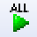

動作確認(Linux編)
✏️ Edit this page on GitHubContents
インストールが正常に終了したら、付属のサンプルで動作テストをします。サンプルは、通常は以下の場所にあります。
- /usr/share/openrtm-1.2/components/python/<サンプルコンポーネントセット名>
ソースからビルドした場合は、ソースディレクトリ下の
- OpenRTM_aist/examples/<サンプルコンポーネントセット名></span>;
サンプルコンポーネントセットSimpleIOを使って、OpenRTM-aistが正しくビルド・インストールされているかを確認します。
#contents(5)
サンプルコンポーネントセットSimpleIO
RTコンポーネントConsoleIn、ConsoleOutからなるサンプルセットです。ConsoleInはコンソールから入力された数値をOutPortから出力するコンポーネント、ConsoleOutはInPortに入力された数値をコンソールに表示するコンポーネントです。これらは、SimpleなI/O(入出力)を例示するためのサンプルです。ConsoleInのOutPortからConsoleOutのInPortへ接続を構成し、これらの2つのコンポーネントをアクティブ化(Activate)することで動作します。
以降、サンプルは/usr/share/openrtm-1.2/components/python/SimpleIO下にあることを前程に説明します。また、Python本体の実行ファイルに対してはサーチパスが設定されているものとします。なお、ソースコードからビルドした場合はサンプル実行ファイルルは
サンプルを使用した動作確認
RTSystemEditorを使った動作確認
以下の説明ではRTSystemEditor(OpenRTP)を使った動作確認を説明します。RaspbianのケースのようにOpenRTPを使用しない環境での動作確認についてはrtshellのインスト―ルの動作確認(Linux編)を参照ください。
ネームサーバーの起動
以下の手順に従ってRTSystemEditor、ネームサーバーを起動してください。
ConsoleInの起動
- ターミナルを起動してConsoleInを起動します。
$ python /usr/share/openrtm-1.2/components/python/SimpleIO/ConsoleIn.py自分でビルド・インストールした場合は、
$ python <source_dir>/OpenRTM_aist/examples/SimpleIO/ConsoleIn.pyなどとしてConsoleInを起動します。
ConsoleOutの起動
- 別のターミナルを起動してConsoleOutを起動します。
$ /usr/share/openrtm-1.2/components/python/SimpleIO/ConsoleOut自分でビルド・インストールした場合は、同様に
$ python <source_dir>/OpenRTM_aist/examples/SimpleIO/ConsoleOut.pyなどとしてConsoleOutを起動します。
System Diagramへの配置
- RTSystem Editorのツリー表示の[>]をクリックすると、先ほど起動した2つのコンポーネントが登録されていることがわかります。
{kind=link}
- システムを編集するSystem Diagramを開きます。上部のエディタを[Open New System Editor]ボタン
 をクリックすると、中央のペインにSystem Diagramが開きます。
をクリックすると、中央のペインにSystem Diagramが開きます。 - 左側のネームサービスビューに
 のアイコンで表示されているコンポーネント(2つ)を中央のSystem Diagramにドラッグアンドドロップします。
のアイコンで表示されているコンポーネント(2つ)を中央のSystem Diagramにドラッグアンドドロップします。

接続とアクティブ化
{kind=link}
{kind=link}

- これらInPort/OutPort(まとめてデータポートと呼びます)を接続します。 OutPortからInPort(またはInPortからOutPort)へドラッグランドドロップすると、図のようなダイアログが現れますので、デフォルト設定のまま[OK]ボタンをクリックします。
{kind=link}
- 2つのコンポーネントの間に接続線が現れます。次に、エディタ上部メニューの[All Activate]ボタン

をクリックし、これらのコンポーネントをアクティブ化します。 - アクティブ化されると、コンポーネントが緑色に変化します。
{kind=link}

- コンポーネントがアクティブ化されるとConsoleInコンポーネント側では
Please input number:というプロンプト表示に変わりますので、適当な数値(short intの範囲内:32767以下)を入力しEnterキーを押します。すると、ConsoleOut側でも入力した数値が表示され、ConsoleInコンポーネントからConsoleOutコンポーネントへデータが転送されたことがわかります。
以上で、RTSystemEditorを用いたコンポーネントの基本動作の確認は終了です。
hogeee---002